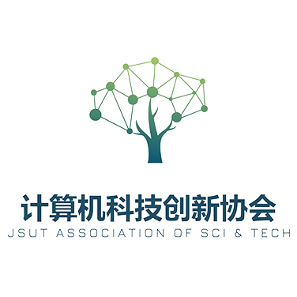

计算机科技创新协会简介 发表于 2021-10-31 分类于 社团信息 阅读次数： 计算机科技创新协会（简称计科协），成立于1996年，是面向全校的学生学术科技组织。在计算机工程学院团委的直接领导下，开展丰富多彩的科技活动，为同学进行课外科技创新提供多方位的服务，促进学生科技水平和创新素质的提高。 计科协的主要负责活动是蓝桥杯大赛的报名及宣讲。今年，我们将致力于技术，知识的分享与实践，让每个人都能了解技术，使用技术，利用技术改变我们的生活。我们将开展Python编程教学，邀请学院老师开展系列讲座，定期举办分享会、座谈会。 